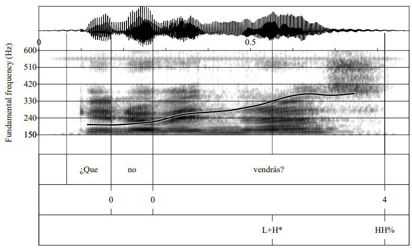
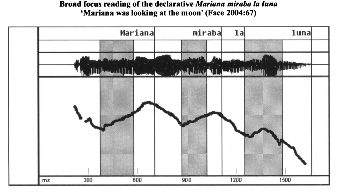
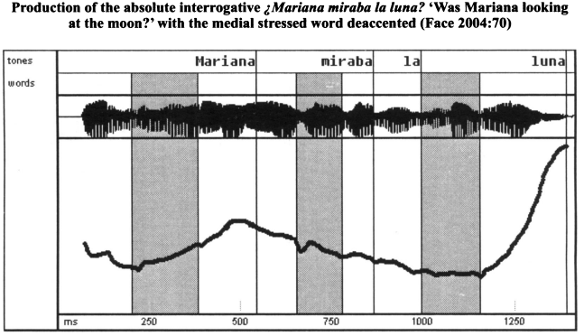
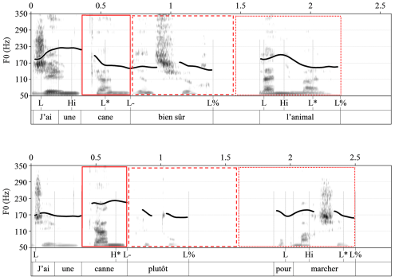
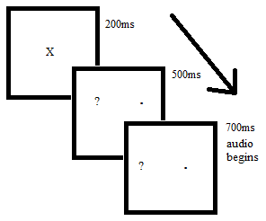

Using Early Intonational Cues to Disambiguate Sentence Modality in L1 and L2 Spanish: An Eye-tracking Study
Robert Esposito
Rutgers University
11/27/25
The basics
What we’ll cover
a basic review of intonation
cues to sentence modality
making prediction in the L1
making prediction in the L2
methodology
Intonation
What is intonation?
Modulation of fundamental frequency (F0), perceived as pitch

Continuous signal, discrete perception

Our goal is to describe the F0 contour with the tonal inventory available to us.
We care about the phonological contrasts and the phonetic implementations
What discrete events are we working with?
pitch accents are anchored to stressed syllables
boundary tones are anchored to phrase boundaries
Castilian Spanish tonal inventory
| Pitch accents | iP boundary tones | IP boundary tones |
|---|---|---|
| H* | L- | L% |
| L* | !H- | !H% |
| L+H* | H- | H% |
| L+¡H* | HL- | HL% |
| L+<H* | LH- | LH% |
| L*+H | L!H% | |
| H+L* | LHL- | LHL% |
Some contrasts we can make
| Pitch accents |
|---|
| H* |
| L* |
| L+H* |
| L+¡H* |
| L+<H* |
| L*+H |
| H+L* |
high and low
Some contrasts we can make
| Pitch accents |
|---|
| H* |
| L* |
| L+H* |
| L+¡H* |
| L+<H* |
| L*+H |
| H+L* |
monotonal or bitonal
high and low
Some contrasts we can make
| Pitch accents |
|---|
| H* |
| L* |
| L+H* |
| L+¡H* |
| L+<H* |
| L*+H |
| H+L* |
peak alignment with stressed syllable
monotonal or bitonal
high and low
Some contrasts we can make
| Pitch accents |
|---|
| H* |
| L* |
| L+H* |
| L+¡H* |
| L+<H* |
| L*+H |
| H+L* |
peak scaling???
peak alignment with stressed syllable
monotonal or bitonal
high and low
Cues to sentence modality
Three pre-final cues


- first peak scaling
- presence or absence of medial pitch accent
- nuclear pitch accent?
Prediction
Prediction in the L1
Humans constantly predict non-linguistic (Bar, 2007; Lee & Mumford, 2003) and linguistic information (Altmann & Kamide, 1999; Van Petten & Luka, 2012)
Extant research suggests that intonational information is processed in real-time (Crocker, 2010; Grodner et al., 2010; Kamide et al., 2003; Levy, 2008)
Prediction in the L1
Homophones can be distinguished based on a “contradictory” contour (Esteve-Gibert et al., 2020)

But not all cues are weighted equally
L1 German and L1 English speakers completed a series of on-line mouse-tracking studies
Do speakers use early pitch accents to predict if a referent downstream is given or contrastive?
German speakers ❌
English speakers ✔️
Roettger et al. (2021)
But not all cues are weighted equally
- perceivers don’t use prenuclear pitch accents to infer speaker intentions?
- depends on type of prenuclear pitch accent? e.g., unmarked rise vs salient rise-fall
- delayed semantic integration? i.e., prosodic prominence can only be judged relative to its environment
Roettger et al. (2021)
In sum…
It’s not a given that L1 Spanish speakers will integrate early intonational cues to predict sentence type!
Prediction in the L2
L1 German L2 English [CEFR B2 or above; Europe (2001)] learners predict referent based on contrastive pitch accent in L1, but not in L2 for the same sound-to-meaning prediction (Foltz, 2021)
In contrast, Klassen (2015) found that L1 Spanish L2 English learners predict referent based on contrastive pitch accent in L2
The cues matched in the L1 and L2 in both studies… so why the difference?
The Spanish-English bilinguals had more time to predict in the task?
Comparing English and Spanish sentence modality cues
| Cue | Spanish | English |
|---|---|---|
| First peak height | higher = interrogatives lower = declaratives | associated with emphasis (Chen, 2003) |
| Presence/absence of medial pitch accent | absence = interrogative presence = declarative | no correlates |
So what do we expect?
L2 speakers can predict when cues match, but there’s a delay
Here, no cues match
Research questions
Is the first F0 peak height used to predict sentence modality?
Is the presence or absence of a medial pitch accent used to predict sentence modality?
Do L1 English L2 Spanish speakers recruit either first F0 peak height or the presence/absence of a medial pitch accent to predict sentence modality?
Do prediction capabilities depend on amount of time (operationalized here as sentence length) a learner has to process a given cue?
Methodology
Participants
- 25 L1 Madrid Spanish speakers
- 100 L1 UK English L2 Spanish late learners (B2 or higher)
- primarily exposed to Spain Spanish
- range of proficiencies from B1 to B2
- range of exposures
Materials
- LexTALE-ESP (Izura et al., 2014)
- language background questionnaire
- eye-tracking task
Eye-tracking task
Suggestions?
Would be better to have semantics-based stimuli instead of directly asking if utterance is statement/question, but not sure how to go about that
Thanks!

| rme70@scarletmail.rutgers.edu | |
| jvcasillas.com/quarto-rutgers-theme | |
| robertespo.github.io | |
| @RobertEspo |